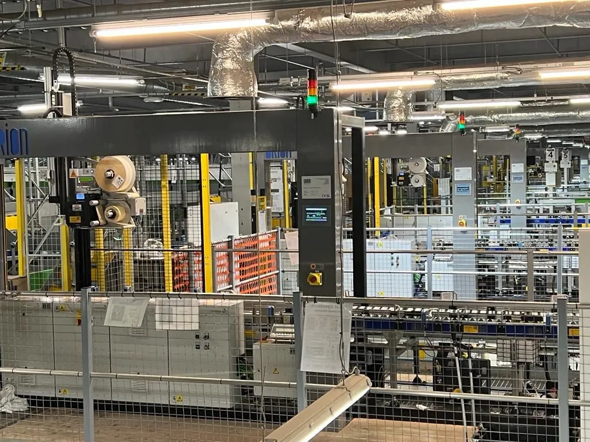

How print & apply works
Every print & apply unit is three subsystems working to one clock: a print engine, an applicator, and a verification loop. Understanding each is the fastest way to judge a quotation.
The print engine
The print engine is an industrial thermal printer — usually thermal transfer or direct thermal — fed by the host system with the data for the specific parcel in front of it. As the parcel approaches, the system identifies it (typically by barcode scan or tracked position on the conveyor), requests the correct label data from the WMS or carrier system, prints it and presents it on a peel plate ready for application. Print resolution, label size range and print speed all need to match your label content: dense 2D codes and small carrier fonts are less forgiving than a plain address block.
The applicator: tamp, blow or wipe
- Tamp. A pneumatic or electric actuator carries the label on a vacuum pad and presses it onto the product. Tolerant of varying product heights, accurate in placement, and the most common general-purpose choice — but the tamp stroke takes time, which caps the rate.
- Blow (air-jet). The label is held on a grid by vacuum and blown onto the product with a burst of air — no contact at all. Suits fragile products, uneven surfaces and higher line speeds, though placement is typically slightly less precise than tamp and the method is more sensitive to label size and air setup.
- Wipe (merge). The label peels off the liner directly onto the passing product and a brush or roller wipes it down. Mechanically the simplest and typically the fastest — but it needs consistent product height and position, so it favours uniform cartons over mixed freight.
None of these is "best". The right method falls out of your product profile, line speed and label position — which is why a serious supplier asks for carton data and samples before quoting an applicator type.
The verification loop
After application, a scanner or camera reads the label back. If the code reads and matches the expected parcel, the parcel carries on. If it doesn't — misprint, misapply, wrinkle, void — the system flags it, and a well-designed line diverts the parcel to a reject lane rather than letting it travel. This loop is what turns a labeller into a system: without it, a fault produces hundreds of bad parcels an hour and nobody finds out until the carrier does.
What separates a good installation from a bad one
The labeller itself is rarely the problem. In most operations, print & apply projects succeed or fail on the integration around the machine.
- Conveyor integration and speed-matching. The labeller must be fed parcels at a controlled pitch and speed, square to the applicator, with tracking that knows exactly which parcel is in front of the print engine. A labeller bolted onto an uncontrolled line will misapply no matter how good the hardware is — gapping, guiding and encoder feedback are part of the job, not extras.
- Label stock discipline. Thermal labels, adhesives and liners vary widely. Cheap stock that sheds adhesive gums up peel plates and print heads; the wrong adhesive lifts off polybags in a cold trailer. A good installation specifies the label stock alongside the machine and proves it on your products.
- A closed verification loop. Print-and-hope is not a system. Every label should be scanned after application, every no-read should have a defined route, and read rates should be visible to the operation in real time.
- Data integration. The labeller is only as accurate as the data feed behind it. The interface to your WMS and carrier systems — which system generates the label, what happens when a carrier service is unavailable, how manifesting is confirmed — needs designing and testing with the same rigour as the mechanics. This is controls and software work, and it is where in-house capability shows.
- Failure behaviour. Print heads wear, ribbon runs out, stock jams. A good installation plans for this: accessible consumable changes, clear fault messaging, and a line design that fails safe rather than labelling blind.
When to automate labelling
There is no magic parcel number, but three signals make the case in most operations. First, headcount: when labelling occupies one or more full-time operators per shift, the station is a standing labour cost of tens of thousands of pounds a year at the UK all-in rate of around £16.30 per hour — our guide to the real cost of manual sortation works through the same arithmetic for sort labour. Second, error cost: a mislabelled parcel is not just a relabel. It is typically a carrier surcharge, a failed delivery, a customer contact and sometimes a lost customer — and manual labelling error rates that look small on paper compound quickly at volume. Third, throughput: if the labelling station sets the pace of the line, every conveyor and sorter downstream is underused. When any two of those three are true, automated labelling usually pays for itself quickly; the ROI calculator lets you test it against your own volumes.
Proof at scale: ten SLAM lines inside a live Amazon fulfilment centre

SLAM — scan, label, apply, manifest — is print & apply at its most demanding: the label is the last thing that happens to a parcel before it ships, and everything must happen at line rate. Orion delivered ten SLAM lines — the fastest in production — manifesting, weighing, printing, applying and verifying labels at full line speed inside a live Amazon fulfilment centre. The complete package ran on Siemens TIA Portal — mechanical, electrical and software from one supplier — and was installed and commissioned without stopping the operation. That last point matters most to a buyer: labelling sits at the heart of outbound, and a supplier who cannot commission around a live operation will cost you shipping days. More on the project sits on our fulfilment automation page.
The buyer's checklist
Ten things to pin down before you sign a print & apply order:
- Throughput, honestly stated. Rated labels per minute at your label size and your parcel pitch — not the brochure maximum.
- Application method justified. Why tamp, blow or wipe for your product mix — backed by samples run, not opinion.
- Product envelope. Minimum and maximum parcel sizes, heights and surfaces the applicator will handle, including your worst case, not your average.
- Verification included. Post-application scan, no-read handling and a reject route designed into the line.
- Data interfaces specified. Which system generates label data, how the WMS and carrier integrations work, and who owns them when something changes.
- Conveyor integration scope. Gapping, guiding, tracking and speed control — in whose scope, and priced.
- Consumables and label stock. Specified stock, print-head life expectations and how quickly ribbon and label changes happen mid-shift.
- Failure modes and spares. What happens on a jam, a misprint, a head failure — and which spares are recommended on site.
- Commissioning plan. Can it be installed and proven around a live operation, and what evidence supports that claim?
- Total cost, including support. Purchase or monthly finance figure, plus maintenance, consumables and software support — the whole line, not the box.
How Orion delivers it
Orion builds print & apply into the conveyor system rather than bolting a labeller onto it. Mechanical, electrical, controls and software come from one UK facility — the same in-house team that delivered the Amazon SLAM lines on Siemens TIA Portal — so speed-matching, verification and WMS integration are designed once, by the people who build the line. Systems are built to ISO 9001:2015 with UKCA/CE marking, conveyor packages are typically on site in 6–10 weeks, and everything is available on monthly finance, with entry systems from around £4,000 per month on a 60-month term, subject to specification and approval. Print & apply also rarely travels alone: it usually sits within a wider outbound line alongside scan tunnels, weighing and sortation — the full range is on the products page, and the sector detail on the parcel centres and 3PL automation pages.